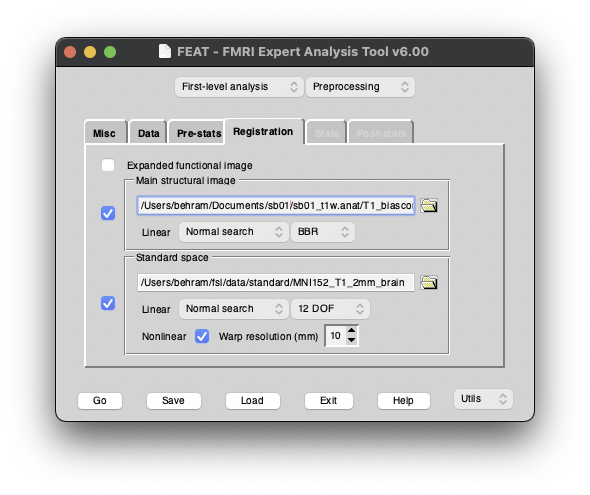

Preprocessing - Ön İşlemleme
fMRG datasının ön işlemlemesinin en temel amacı, datadan çalışmamızla ilgili olmayan kısımları çıkarmak ve grup analizi için her bir datanın belli bir standartta olmasını sağlamaktır.
Örnek olarak; Bir fMRG çalışmasındaki MR çekimi her ne kadar beyne odaklansa da bir çok çevre dokuyu da içine alır. Gözler, ağız, burun, boyun, kafatası, beyin zarları vs gibi çevredeki bir çok anatomik yapı görüntünün içinde yer alacaktır. Ancak çoğu zaman çalışmalarımız beyin harici bir dokuyu içermiyor olacaktır. Bu sebeple bu kısımların varlığı çalışma için gereksizdır. Yalnızca beyin dokusu kalacak şekilde diğer dokuların datadan temizlenmesi brain extraction dediğimiz ön işlemleme adımlarından biridir.
Veya başka bir örnek olarak; fonksiyonel çekim esnasında katılımcılar cihaz içinde hareket edebilirler. Bu hareket datanın içinde beynin belli bir bölgesinin denk geldiği koordinatların değişmesine sebep olur. Başka bir deyişle bir voxel çekimin 2.dakikasında frontal korteksten bir kısmı içeriyorken, 3.dakikada hareketten dolayı boş alanı içeriyor olabilir. Biz analiz esnasında o voxeldeki BOLD sinyal değişimini takip edip frontal kortekste bir aktivite farkı varmı görmek istiyorsak bu hareketin düzeltilmesi gerekir. Bu düzeltme de yine ön işlemleme adımlarından biri olan Motion correction'dır.
Anatomik ve Fonksiyonel datanın hazırlık basamakları
- Brain extraction
- Registration
- Motion correction
- Distortion correction
- Independent Component Classification
- Artefact rejection
MRG datalarımızın analizi için FSL yazılım paketini kullanacağız. FSL yazılım paketi SPM ile birlikte akademik camiada en sık kullanılan MR analiz programıdır. SPM yerine FSL tercihimizin sebebi MATLAB gibi lisans gerektiren bir platform yerine ücretsiz bir şekilde kolayca çalıştırılabiliyor olmasıdır.
Şimdi sırasıyla teker teker yapılması gereken işlemlere detaylı bir şekilde bakalım.
Anatomik datanın ön işlemlemesi
Bir fMRG çalışmasında her ne kadar fonksiyonel sekans birincil öneme sahip olsa da t1 ağırlıklı anatomik sekans da gyrus, sulcus ve derin beyin çekirdeklerinin yüksek çözünürlüklü lokalizasyonunu içerdiği için çok büyük öneme sahiptir.
Anatomik datanın ön işlemlemesinde en önemli adım beyin dokusu dokuların ayrıştırılıp bias correction yapılmasıdır.
FSL'de fsl_anat isimli script anatomik datanın tüm analizlerini yapar. Bu script input olarak t1 ağırlıklı anatomik datayı ister ve output olarak da .anat ile biten bir klasör verir. Bu klasör içinde Gri madde, ak madde, ve BOS segmentasyonu sonuçları, brain extraction için kullanılan maske, anatomik datanın standart space'e oturtulmuş hali gibi çok sayıda başka analizlerde de kullanılabilecek veriler verir. Script'in çalışma süresi bilgisayardan bilgisayara değişmek üzere 25-45dk arası değişebilir.
Bu analiz sonucunda T1_biascorr_brain isimli dosyayı tekrar kullanacağız.
Kullanacağımız T1_biascorr_brain isimli dosyaya bir göz atalım.
Gördüğümüz gibi beyin dokusu harici dokuların tamamı datadan atılmış durumda.
Fonksiyonel datanın ön işlemlenmesi
FEAT
Fonksiyonel datanın ön işlemlenmesinde FSL yazılım paketinin FEAT aracını kullanacağız. Bu aracı komut satırından Feat veya Feat_gui yazıp enterlayarak çağırabiliriz.
Burada öncelikle ön işlemleme yapmak istediğimiz için sağ üst kısımdan preprocessing'i seçeceğiz.
Select 4D data tuşuna basıp fonksiyonel datamızı seçeceğiz. Doğru datayı seçtiğimiz takdirde önceden bildiğimiz gibi 120 volume ve 2 saniye TR olan bir data seçildiğini görebiliriz.
Bu ilk ekranda sinyal için bir high-pass filtre koyabiliriz ve datanın ilk birkaç volume'ünü silebiliriz. Ben genel olarak katılımcının sekans başladıktan sonra ilk birkaç saniye hareket etmesi vb ihtimalleri göz önünde bulundurarak yaklaşık 10 saniyelik bir kısmı atmayı tercih ediyorum. Bu da bir volume 2 saniye diye düşünürsek 5 volume oluyor.
Burada önemli bir nokta olarak şunu belirtmek gerekiyor. Eğer dinlenim durumu değil task çalışacaksanız bu volumelerın çıkarılması deney dizaynınızı major bir şekilde bozacaktır.
Pre-stats sekmesine geçince şu seçenekleri görüyoruz.
Burada daha önce bahsettiğimiz birkaç ön işlememe adımını tek bir pencerede görüyoruz. - Data için hareket düzeltmesi, yani motion correction, FSL'in MCFLIRT isimli bir algoritması tarafından yapılacak. - b0 unwarping seçeneği manyetik alan inhomojenitesi kaynaklı bozuklukların düzeltmesi için fieldmap datalarını kullanacak. - Spatial smoothing datayı bir miktar blurlayarak yumuşatacak. - MELODIC ise fonksiyonel datayı independent componentlere bölecek.
Spatial smoothing genel bir kural olarak voxel boyutunun 1.5 katı civarı seçilebilir. Ancak burada önemli bir detay mevcut. Uygulayacağımız smoothing sonuç görmeyi beklediğimiz alanın ya da hipotezde araştırdığımız alanın boyutundan daha büyük olmamalıdır.
Son olarak da Registration sekmesine geçince şu seçenekleri göreceğiz. 
Daha önce her bir datanın grup analizi için belli bir standartta olması gerektiğinden bahsetmiştik.
Bir çalışmada örnek olarak iki grup arasında Broca alanındaki aktiviteleri kıyaslayacak isek, iki gruptaki her katılımcının datasında inferior frontal gyrus'un aynı koordinatlardaki voxellerde olması gerekir.
Bu standardizasyon registration dediğimiz çakıştırma adımı ile yapılır. Her bir data evrensel bir standart olan MNI152 standart düzlemle çakıştırılabilir veya çalışma için bir ortalama düzlem taslağı oluşturulup onunla çakıştırılabilir.
Temel olarak iki farklı çakıştırma/registration yöntemi vardır. Linear ve Non-linear registration.
Linear registrationda beyin 3 boyutlu düzlemde rotasyon yapabilir, boyu eni uzatılıp kısaltılarak standart düzleme oturtulabilir. Ancak bu yöntemle beyin şeklinden kaynaklanan farklılıklar tamamen kompanse edilemez.
Non-linear registration ile her bir voxele belli bir açıyla yön verilip taslak düzleme buruşuk bir şişenin içine balon şişirirmiş gibi birebir çakıştırma yapılır.
MNI152-LinearReg-NonlinearReg
Bu pencerede biz fonksiyonel datamızı evrensel standart düzlem olan MNI152 düzlemi ile registration yapmak istiyoruz. Ancak fonksiyonel data, sekansın özelliklerinden dolayı bu çakıştırmayı yapacak yeterlilikte anatomik detay içermez. Bu sebeple fonksiyonel data katılımcının kendi anatomik datasıyla çakıştırılır. Sonra bu anatomik data sayesinde fonksiyonel datayı da MNI152 standart düzleme çakıştırmak için gerekli matriksler elde edilir.
Bütün bu ayarları yaptıktan sonra sol alttakı 'Go' tuşuna basılır ve bu işlem de yaklaşık 30dk civarı sürer. İşlem tamamlandıktan sonra output olarak elimizde .feat ile biten bir klasör olacaktır.
Artefact temizleme
Fonksiyonel MRG datası daha önce bir kısmından bahsettiğimiz gerçek sinyal olmayan noise dediğimiz istenmeyen artefaktları içerecektir. - Hareket artefaktları - Pulsasyondan kaynaklanan fizyolojik artefaktlar - Manyetik alan inhomojenitesi kaynaklı artefaktlar
Datada görebileceğimiz artefakt çeşitlerindendir.
Bir önceki aşamada FEAT arayüzünde tiklediğimiz MELODIC seçeneği fonksiyonel datamızda independent component keşfi yapmıştı.
Independent Component Analizi nedir?
Independent Component exploration ile, fonksiyonel data içinde karakteri birbirinden farklı bütün bold sinyalleri birbirinden ayrılır. Böylece gerçek dinlenim durumu sinyali karakterine sahip sinyaller ile artefaktlar birbirlerinden ayırt edilebilir. Aynı zamanda farklı networkler de bu şekilde gözlemlenebilir.
MELODIC sonrasında birbirinden ayrı komponentleri gözlemleyip artefaktları işaretleyeceğiz. Daha sonrasında işaretlediğimiz artefaktları datadan ayıklayacağız.
Bunun için komut satırına şu komutu girmemiz gerekiyor.
fsleyes --scene melodic sb01_t1w.anat/T1_biascorr_brain sb01_resting.feat/filtered_func_data.ica/melodic_IC -dr 3 25 -cm red-yellow -nc blue-lightblue
Burada artefakt ayıklamada bize en yardımcı olacak husus dinlenim durumu ağlarının BOLD sinyal karakterleri. Bu sinyaller rekans olarak 0-0.1 aralığında beklenir. Daha yüksekte görülen sinyallerin artefaktlardan kaynaklandığını düşünebiliriz.
Resimlerde görüldüğü gibi bu komut bize 30 küsür adet komponenti sağda liste olarak gösteriyor ve bu komponentleri işaretlememizi sağlıyor. Her komponenti tek tek sinyal veya noise olarak işaretledikten sonra 'Save labels' seçeneğine tıklayıp etiketlerimizi labels.txt isimli bir dosyaya kaydedelim.
Bir sonraki aşamada ayıklamak için işaretlediğimiz artefakt içeren komponentleri datadan çıkaracağız. Bunun için yine FSL yazılım paketinde yer alan fsl_regfilt komutunu kullanacağız.
fsl_regfilt komutu input olarak .feat klasöründen bir kısım dosya ve hangi ayıklanmak için işaretlediğimiz komponentlerin datadaki sırasını istiyor. Output olarak da temizlenmiş datayı veriyor.
fsl_regfilt -i sb01_resting.feat/filtered_func_data -d sb01_resting.feat/filtered_func_data.ica/melodic_mix -f '3, 5' -o sb01_resting.feat/filtered_func_data_clean
Bu adım yaklaşık 1 dk içinde tamamlanacaktır.
Fonksiyonel datanın Non-linear registration'ı
Grup analizi öncesi son adım olarak artefakttan temizlenmiş datayı MNI152 standart düzlemine non-linear olarak çakıştıracağız.
Hatırlarsanız FEAT adımında bu çakıştırma için gerekli matrixleri üretmiştik. Bu matrixleri kullanarak FSL'in applywarp scripti ile bu son çakıştırmayı yapıp datayı grup analizine hazır hale getireceğiz.
applywarp -r sb01_resting.feat/reg/standard.nii.gz \
-i sb01_resting.feat/filtered_func_data_clean.nii.gz \
-o sb01_resting.feat/filtered_func_data_clean_standard.nii.gz \
--premat=sb01_resting.feat/reg/example_func2highres.mat \
-w sb01_resting.feat/reg/highres2standard_warp.nii.gz
Bu komut input olarak temizlenmiş fonksiyonel datayı, standart düzlemi ve bahsettiğimiz matrixleri alıp output olarak MNI152 standart düzleme oturtulmuş fonksiyonel datayı verecek.
Bu basamak da bilgisayarınızın hızına göre değişmekle beraber yaklaşık 30dk sürecektir.
Grup Analizi - Deney Dizaynı ve GLM
Deneyimizdeki her katılımcının MRG datası için ön işlemleme adımlarını yapıp grup analizine hazırladıktan sonra grup analizine geçebiliriz.
Dersin bu kısmına kadar tek kişinin datasıyla çalıştığımız için grup analizinden yalnızca teorik olarak bahsedeceğiz.
Grup analizinde en önemli kısım hipotezinizi test edebileceğiniz bir deney dizaynı oluşturmak olacaktır. Bu dizaynı MRG analizinde kullanmak için dönüştürmek için FSL'in GLM adlı aracını kullanabilirsiniz. GLM ile ilgili detaya girmeyeceğiz ancak şu linkten deneyinize uygun şekilde nasıl bir dizayn oluşturabilireceğinizin örneklerini görebilirsiniz.
https://fsl.fmrib.ox.ac.uk/fsl/docs/#/statistics/glm